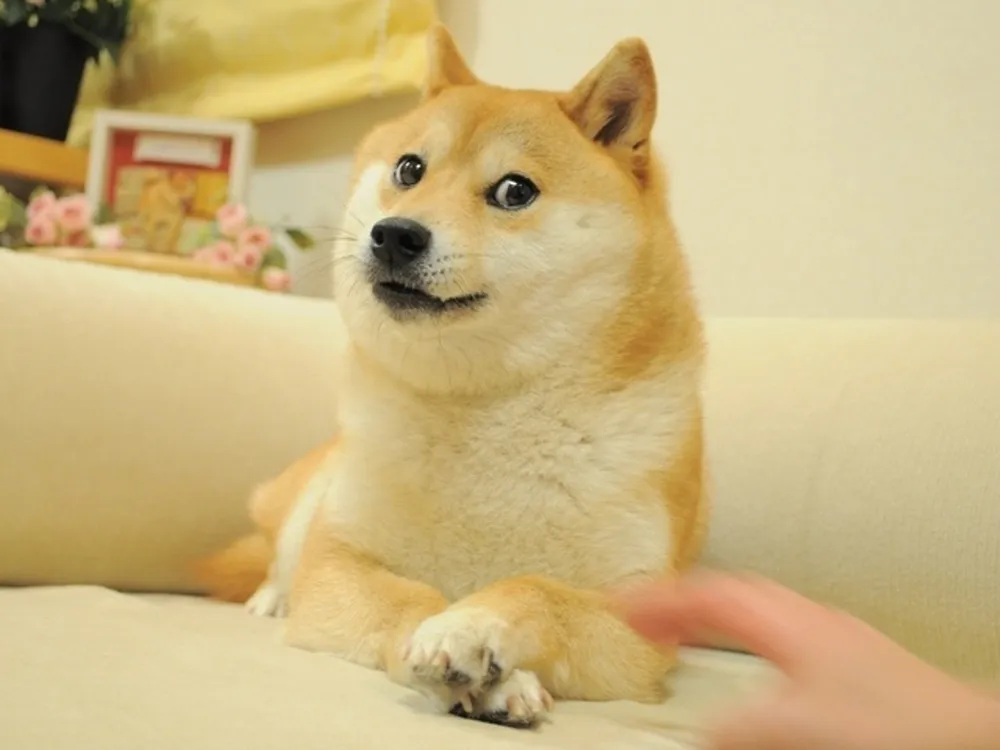

시바견
일본에서 1회 출연료가 무려 20만엔이라고 함
사실 이건 시미켄이 밝힌 건데
AV 촬영 현장 갔더니 시바견 2마리가 있었고
누가 데려온 애완견인 줄 알았는데 사실 촬영 동료였고
이건 아니다 싶어서 똥 먹는 시미켄조차 거부 해서 촬영 무산 됐다고 함
참고로 톱클래스 남배우인 시미켄이 촬영하면 1편당 5만엔이라고

시바견
일본에서 1회 출연료가 무려 20만엔이라고 함
사실 이건 시미켄이 밝힌 건데
AV 촬영 현장 갔더니 시바견 2마리가 있었고
누가 데려온 애완견인 줄 알았는데 사실 촬영 동료였고
이건 아니다 싶어서 똥 먹는 시미켄조차 거부 해서 촬영 무산 됐다고 함
참고로 톱클래스 남배우인 시미켄이 촬영하면 1편당 5만엔이라고
그거 맞음
그게 뭔데라고 물어보고 싶은데 뭘생각해도 충격적이야
도그파이트
품번 좀..
........털인거냐?
설마 개한테 박는거야? 아니면 개가 박는거야?
씨발 뭐가됐던 촬영거부할만하네
개한테 박히면서 개한테 박는거 아닐까?
오메 씨발거
시바견 = 4시미켄
전설의 시바켄시바켄시미켄 좋잖아
앵무키우는 스트리머한테 앵무를 AV쪽에 제의 연락 받은썰 생각나네 ㅅㅂㅋㅋ
시미켄 아저씨 요새 안보이네
은퇴한지 몇년 됐음
근데 개에 박는것도그렇고 동물학대아님? ㅅㅂ 얼탱이가없네ㅋㅋㅋ
감독이 시미켄 설득하면서 하는말이
시바켄, 시바켄, 시미켄
이거 좋잖아?
라임은 ㅇㅈ
ㄹㅇ 내가 탑 배우여도 개박이든 개한테 박히는거든 그걸 보고 박는거든 거절했겠다
수간은 근데 또 마이너장르로 어케 공급은 계속 되는거같던데
수황시리즈 ㄷㄷ
개가 박는거야 개한테 박는거야
두마리라면..
둘다일지도?
박고박히고 두마리면 높은확률로 숫캐과 암캐
일단 네가지 선택지일듯.
옛날 프루나 시절이 진짜였는데.. 개랑 말이랑 그때 다봤지..
지금은 일본AV도 진짜 깨끗해진편.. 옛날 바키시리즈보고 충격먹은거 잊혀지지않는다..
웹하드중 파일구리가 로스트미디어 심연의 정점이긴함. 진짜 온갖험한것들이가득참
시발 ㅋㅋㅋㅋ
아니 저쪽 업계는 대본이라던가 이런거 안줌?
현장 가봐야 무슨 내용인지 아는거야?
뭔촬영인데 개까지 나오냐 설마 그거냐